Diagnóstico
consultivo
Distingo una necesidad de capacitación de un reto de proceso, comunicación o desempeño antes de proponer una solución.
Soy Javier Rodríguez Rangel. Diseño experiencias de aprendizaje y colaboro en la coordinación de proyectos L&D, conectando necesidades de desempeño, especialistas y equipos de producción.
Combino Learning Design, coordinación de proyectos y un enfoque consultivo para llevar una necesidad desde su diagnóstico hasta la entrega. Trabajo en español e inglés con equipos corporativos, y mi formación en animación y arte digital me ayuda a explicar ideas complejas con claridad.
Explorar casos de estudioLo que aporto
Distingo una necesidad de capacitación de un reto de proceso, comunicación o desempeño antes de proponer una solución.
Conecto audiencia, contexto, objetivos, práctica y evaluación para diseñar una experiencia útil y coherente.
Planeo tiempos y entregables, coordino SMEs y equipos internacionales, y doy seguimiento a tareas, avances y cambios.
Defino señales de comprensión y aplicación, y uso lo aprendido en cada entrega para orientar la siguiente iteración.
Casos seleccionados
Por confidencialidad, presento el contexto, mi aportación y la lógica de cada solución sin exponer información interna. En una conversación puedo profundizar en el proceso y los aprendizajes de cada proyecto.
Cambio organizacional · e-Learning
Diseñé una experiencia para acompañar a colaboradores que comenzaron a trabajar de forma remota y traducir la normativa mexicana en decisiones cotidianas después de la pandemia.
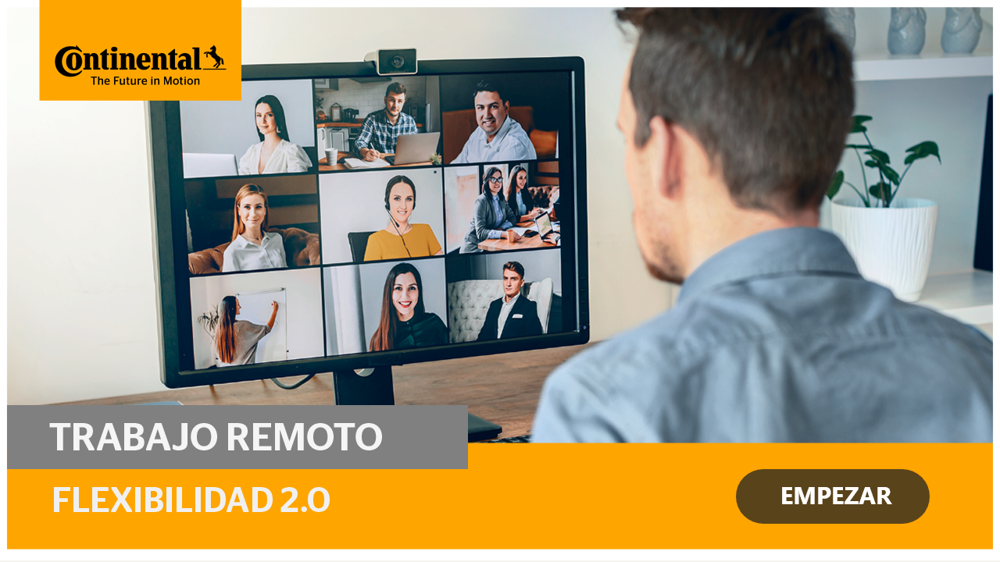
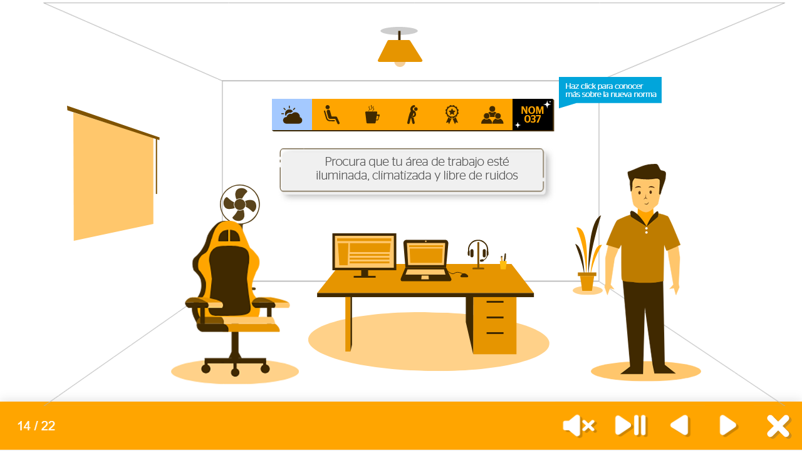
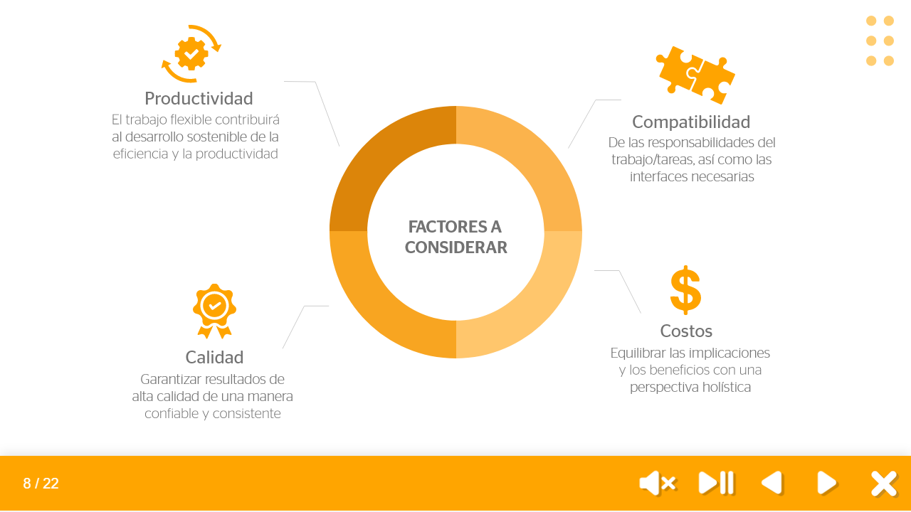
Fragmento del curso y su tratamiento audiovisual.
Proceso
Trabajé con SAM para iterar la solución y producirla en Captivate con recursos de Adobe Creative Suite.
Qué buscaría medir
Comprensión de prácticas de autocuidado, reconocimiento de riesgos y uso de los recursos disponibles.
Conocimiento experto · MOOC
Convertí conocimiento especializado en una experiencia interna que combina grabación presencial, animación y una estructura de curso.
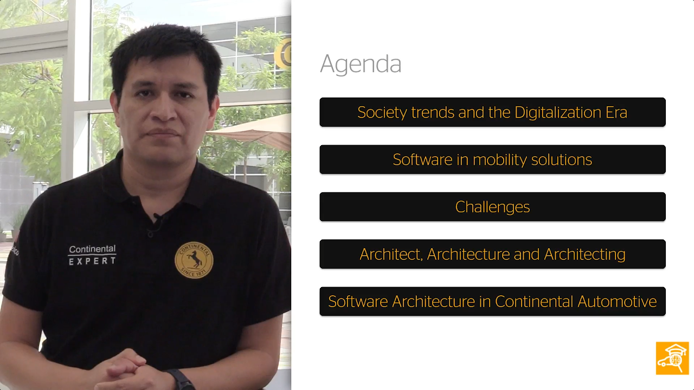
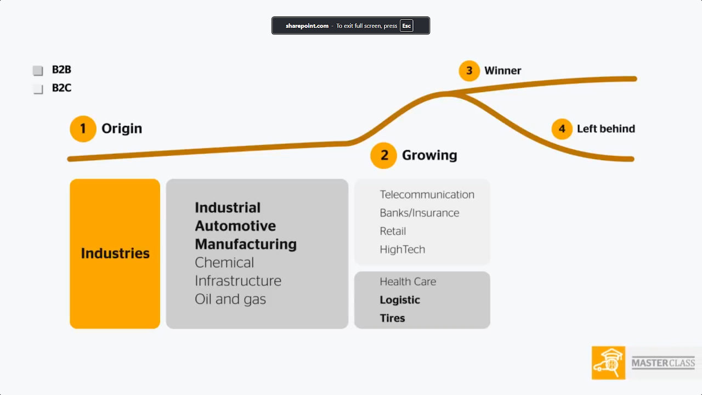
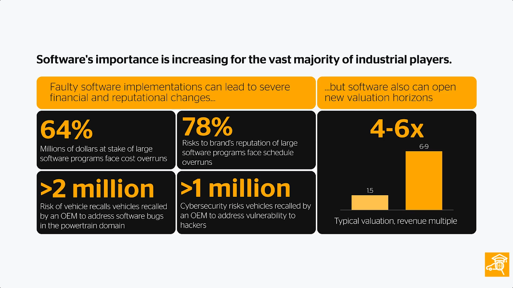
Muestra de la integración entre especialista, video y animación.
Proceso
Desarrollé el proyecto con SAM, Captivate y Adobe Creative Suite, desde la producción hasta su publicación como curso interno.
Qué buscaría medir
Finalización, claridad percibida y capacidad para aplicar los conceptos en situaciones del trabajo.
Habilidades conversacionales · e-Learning multilingüe
Diseñé una experiencia en varios idiomas para que líderes y colaboradores comprendieran el feedback como una práctica concreta, estructurada y útil.
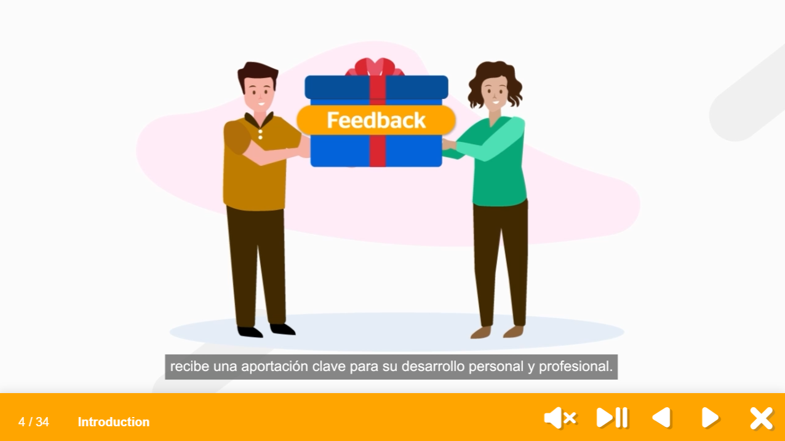
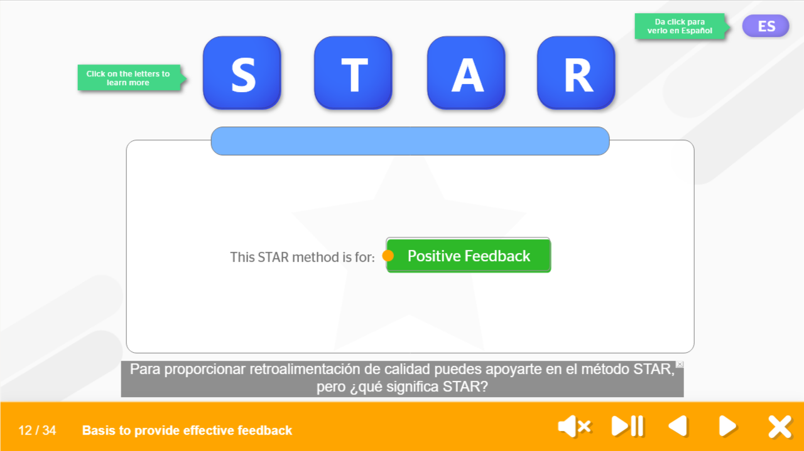
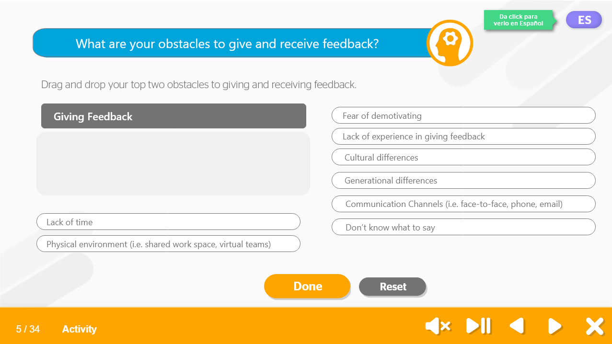
Muestra del curso y de sus interacciones. Las versiones publicadas no incluyen todos los idiomas desarrollados.
Proceso
Apliqué ADDIE y desarrollé la experiencia con Captivate y Adobe Creative Suite.
Qué buscaría medir
Reconocimiento del método STAR, confianza para iniciar la conversación y aplicación de una estructura clara.
Programa modular · Liderazgo
Diseñé el primer curso de una serie para presentar la filosofía de liderazgo de la organización y conectar sus principios con temas clave de recursos humanos.
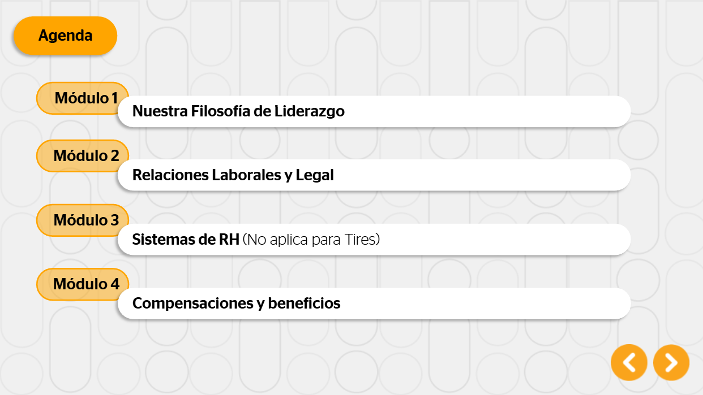
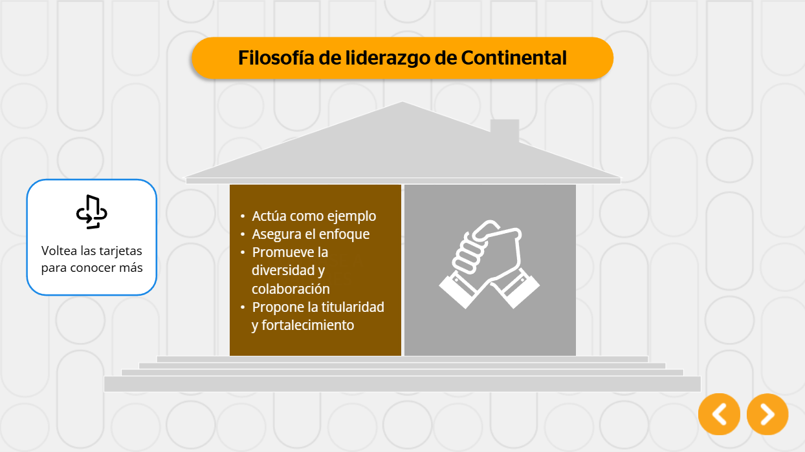
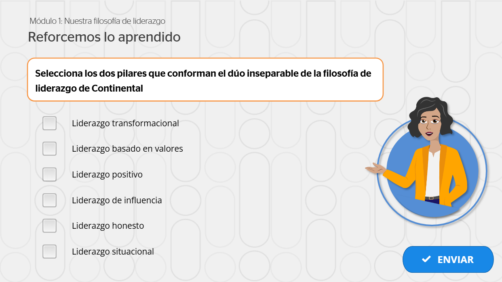
Proceso
Trabajé con SAM y desarrollé la experiencia en Articulate con recursos de Adobe Creative Suite.
Qué buscaría medir
Comprensión de la filosofía, reconocimiento de los recursos de RH y capacidad para elegir respuestas alineadas.
¿Cómo trabajo?
Identifico la audiencia, el contexto de trabajo, la brecha de desempeño y la conducta esperada antes de recomendar una respuesta.
Defino objetivos, alcance, tiempos, entregables y responsabilidades con managers, SMEs y los equipos involucrados.
Conecto práctica, contenido y evaluación, y hago visible la solución temprano para validar el recorrido.
Doy seguimiento a tareas y avances, presento el estado del proyecto y gestiono cambios junto con el manager o LBP.
Defino señales de comprensión y aplicación, pruebo la solución y documento aprendizajes para la siguiente iteración.
Experiencia
He trabajado en entornos tecnológicos y de manufactura, en español e inglés, llevando iniciativas de aprendizaje desde la necesidad inicial hasta su entrega. En funciones senior he compartido la coordinación con managers y Learning Business Partners: planeación de tiempos y entregables, alineación de SMEs y equipos internacionales, seguimiento de tareas, presentación de avances y gestión de cambios.
Tecnológico de Monterrey
Siguiente conversación
Estoy disponible para oportunidades nacionales e internacionales en Learning Design, coordinación de proyectos L&D y consultoría. Hablemos del reto de desempeño, revisemos el contexto y definamos la respuesta adecuada.
Escríbeme a javo.rodriguez@outlook.com